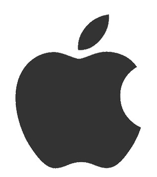
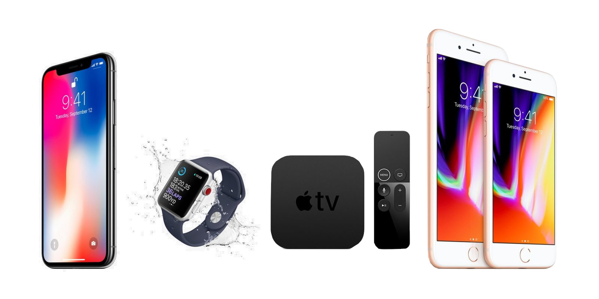

Apple (蘋果)
蘋果公司（英語：Apple Inc.），原稱蘋果電腦公司（英語：Apple Computer, Inc.），是總部位於美國加州庫比蒂諾的跨國科技公司。現時的業務包括設計、開發和銷售消費電子、電腦軟體、線上服務和個人電腦。與亞馬遜，Google和微軟一起被認為是四大技術公司之一。最初由史蒂夫·賈伯斯、史蒂夫·沃茲尼克、羅納德·韋恩創立於1976年4月1日，次年1月3日確定正式名稱為蘋果電腦公司，主業是開發和銷售個人電腦，至2007年1月9日在舊金山Macworld Expo上宣布改名為蘋果公司，象徵其業務重點轉向消費電子領域。
蘋果的Apple II在1970年代助長了個人電腦革命，其後的Macintosh接力於1980年代持續發展。該公司最著名的硬體產品是Mac電腦系列、iPod媒體播放器、iPhone智慧型手機和iPad平板電腦；線上服務包括iCloud、iTunes Store和App Store等；消費軟體包括macOS、iOS、iPadOS、watchOS、以及tvOS作業系統、Safari網路瀏覽器，還有iLife和iWork創意和生產力套件。在2017年時蘋果公司曾位列財星全球500大企業的第9名，《財富雜誌》曾提名蘋果公司為美國2008年最受尊敬的公司、2008年到2012年世界最受尊敬公司，《福布斯》2015年發布的全球品牌價值榜，蘋果公司連續第五年雄踞榜首，其價值曾是世界其他商業品牌的兩倍以上。但是，蘋果公司在其產業鏈中的勞工制度、環境和商業實踐中至今仍然飽受抨擊。
至2019年6月，蘋果公司擁有24個國家的506間零售商店，還有線上蘋果商店、iTunes商店。iTunes商店是世界最大音樂零售商。蘋果公司是市值最高的上市公司，到2014年6月大約擁有市值6000億美元，到同年11月更是歷史上首家突破7000億美元的公司。2018年8月2日，市值突破兆元大關。截至2012年9月29日，蘋果公司全球擁有永久全職員工72800名，臨時全職員工3300名。2013年全球總收入1709億美元。截至2014年1季度，蘋果公司五年平均增長率銷售額39%，利潤率45%。2013年5月蘋果公司首次進入財富500強公司名單前10名，比2012年上升11位，位列第6名。2017年蘋果公司列財富500強公司第4名。
